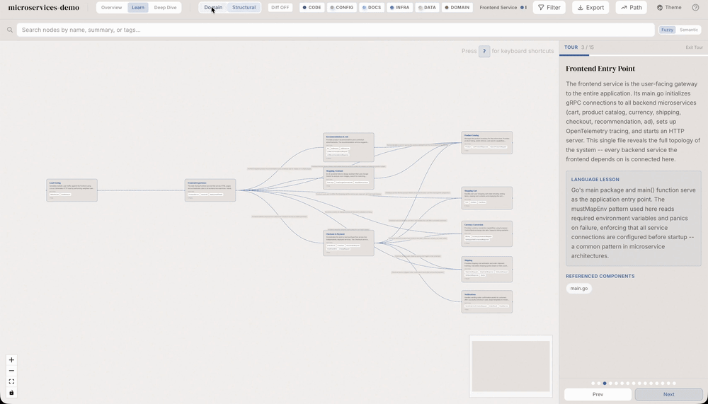

Conteúdo detalhado
🧱 Nó: o átomo do grafo
Tudo no Understand Anything começa num nó. Um nó é uma unidade do código — arquivo, função, classe, ou conceito de domínio. Cada nó carrega metadados extraídos pelo tree-sitter (símbolos, path, layer) e um sumário gerado por LLM.
🔬 Anatomia de um nó
O id é único e estável; o type classifica; o layer alimenta a layer view; o summary é o que aparece na sidebar.
file
Arquivo do repositório
function
Função / método isolado
class
Classe / interface
domain
Conceito de negócio
🔗 Aresta: relacionamento entre nós
Se o nó é o substantivo, a aresta é o verbo: "importa", "chama", "estende", "compõe", "depende de". É na aresta que mora a história do codebase.
Tipos de aresta no Understand Anything
✓ O que uma aresta diz
- ✓"Esse arquivo importa esse aqui."
- ✓"Essa função é chamada nesses 12 lugares."
- ✓"Mudar essa classe afeta toda essa subárvore."
- ✓"Esse módulo tem zero fan-in — talvez seja morto."
✗ O que uma aresta NÃO diz
- ✗"Quem está certo no design."
- ✗"Por que essa decisão foi tomada."
- ✗"Se essa dependência é boa ou ruim."
- ✗"O que vai quebrar se você mudar (com 100% certeza)."
📊 Métricas que vivem nas arestas
- fan-in — quantos nós apontam para esse nó (quem depende de mim).
- fan-out — quantos nós esse nó referencia (de quem eu dependo).
- centralidade — quão crítico no grafo (intermediário em caminhos).
- ciclos — dependências circulares que pedem refactor.
💾 Persistência em .understand-anything/
Diferente de chatbots que esquecem tudo, o Understand Anything grava em disco. O grafo vira um JSON dentro da raiz do projeto.
📁 Estrutura de pastas
💡 Dica prática
Adicione .understand-anything/intermediate/ ao .gitignore. Mas versione o knowledge-graph.json se o time todo usa o dashboard — fica como artefato de documentação que regenera junto com o repo.
🛡️ Schema validation no load
Quando o dashboard carrega o JSON, ele valida contra um schema (Zod). Se o grafo está corrompido ou desatualizado, aparece um banner de erro em cima — não quebra a UI silenciosamente.
🖼️ Layout do dashboard
Decisão de design clara: grafo é o protagonista. Nada de ChatPanel ocupando metade da tela; nada de editor Monaco. 75% grafo, 360px sidebar à direita, fim de papo.
🎨 Tema dark luxury
- •Fundo preto profundo
#0a0a0a— alto contraste com nós. - •Acentos gold/amber
#d4a574— destaque de seleção e CTAs. - •Tipografia DM Serif Display em títulos — sensação "biblioteca" e não "IDE".
- •Inter no body — leitura de listas e summaries longos.
React Flow
Render do grafo
Zustand
Estado global enxuto
Tailwind v4
Estilo + dark luxury
TypeScript
Strict mode em tudo


📑 Sidebar: as abas Info e Files
A coluna direita de 360px tem duas abas. Toda a informação textual passa por ali — e o conteúdo muda conforme você seleciona um nó ou troca de persona.
Aba "Info" — três estados
Default → seleção → persona
- ProjectOverview — quando nada está selecionado: stats do repo, layers, top nós.
- NodeInfo — ao clicar num nó: sumário, símbolos, vizinhos, tipo.
- LearnPanel — quando a persona Learn está ativa: passos do tour atual.
Aba "Files" — árvore derivada
FileExplorer
A árvore não vem do filesystem diretamente — é construída a partir do grafo estrutural. Resultado: você só vê o que está representado como nó, e clicar dali centraliza o grafo no item.
💡 Detalhe que importa
Como a árvore vem do grafo (e não do disco), arquivos ignorados pelo scanner (node_modules, build, etc.) simplesmente não aparecem. Sem ruído.
📜 Code viewer e full-screen
Clicar num nó de arquivo abre um code viewer que sobe pela base. Botão expand promove para modal full-screen. O syntax highlight é feito por prism-react-renderer.
🔐 Segurança do conteúdo
A allowlist garante que mesmo com o token você não consegue ler arquivos fora do grafo (ex: .env).
✓ Vantagens
- ✓Ler código sem sair do grafo.
- ✓Syntax highlight em ~30 linguagens.
- ✓Modal expandido para inspeção profunda.
✗ Não é IDE
- ✗Sem edição inline.
- ✗Sem refactor automático.
- ✗Sem terminal / debugger.
🧭 Navegação visual e tours guiados
Pan, zoom, search, clique — o usuário navega o grafo como um mapa. Mas o diferencial está nos tours guiados: roteiros gerados automaticamente que mostram nós em ordem de dependência.
Entry points
Onde a aplicação começa
O tour começa pelos arquivos de entrada (main, index, app) — não pelo arquivo aleatório que o "Find file" abriu.
Core layers
Service, Data, UI, Utility
Em seguida, o tour percorre as camadas arquiteturais — você entende a divisão antes de mergulhar.
Hot spots
Nós com alta centralidade
Por último, o tour destaca os nós mais "puxados" — esses você precisa ler com calma.
🔍 Dois tipos de busca
- Fuzzy — por nome de símbolo (rápido, exato).
- Semantic — por significado ("onde tem auth?") — embedding por trás.
✅ Resumo do Módulo
.understand-anything/.Próximo Módulo:
1.3 — Fluxo de uso: do /understand ao dashboard e casos reais